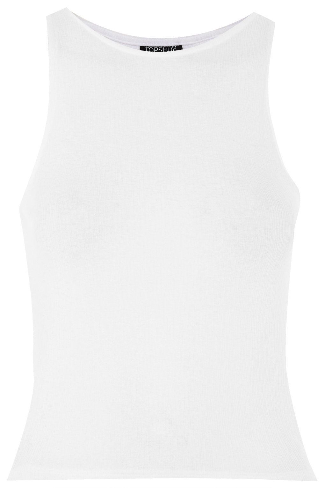
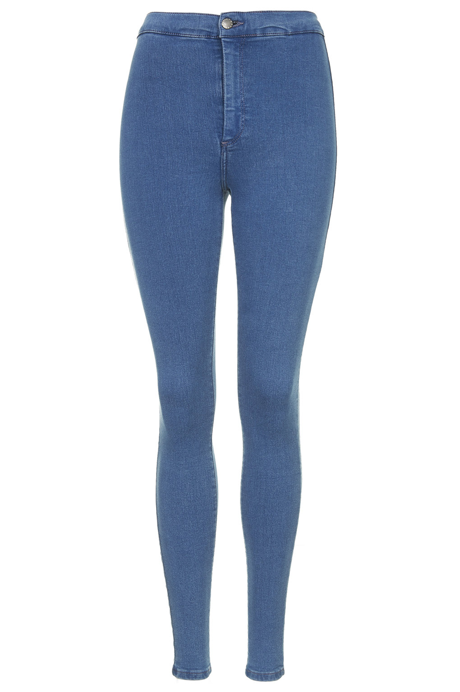
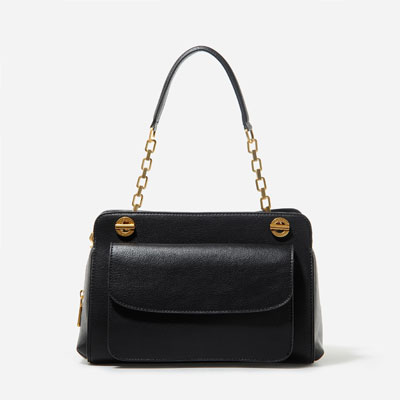
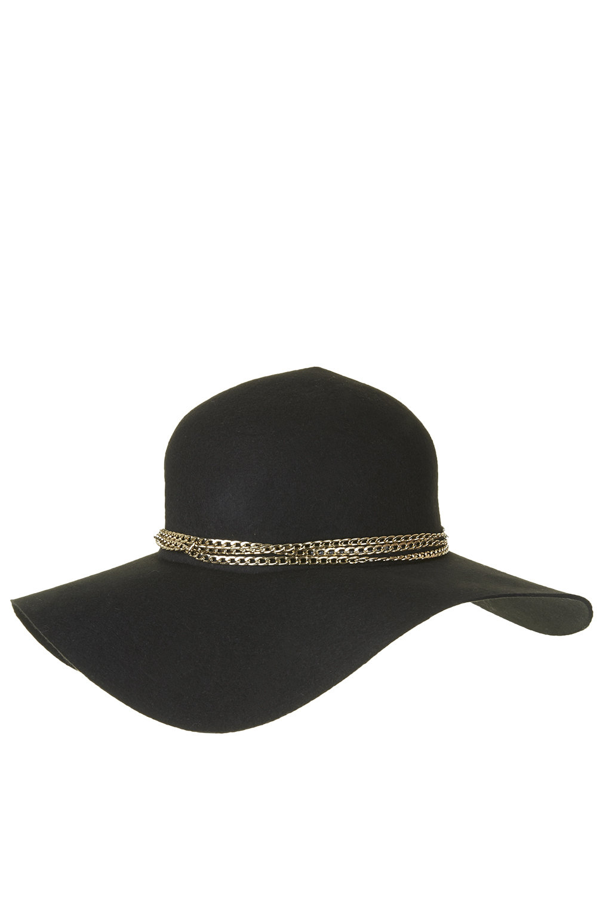

| Item | Unit Price | Quantity | Total | Remove |

Split Back Sequin Tee
Petite Exclusive Jacquard Sweat
Cut-Away Crinkle Tank Top
Scoop Back Stretch Jersey Tee
Looking for a basic tank to style just like Ariana Grande or Kylie Jenner? Try this! Sleeveless Tank Top.
-Polyester
-2% Elastane
Price: SGD$29.00

Moto Indigo Rinse Mom Shorts
Moto Black Joni Jeans
Moto Black Denim Ripped Hotpants
MANGO Skinny Newpaty Jeans
High Rise Jeans with 2 back pockets and class trims.
-70% Cotton
-26% Polyester
-4% Elastane
Price: SGD$79.00

Double Buckle Calf Boots
Aubery Silver Trim Ankle Boots
Bunk Hiker Boots
Toni Mid-Calf Chunky Heel Boots
Think of skipping the heels and not wanting to look like a fashion disaster? Try this! Comes with a round toe front and quilted sides.
Price: SGD$53.90

PU Backpack
Smart Crossbody Bag
Work Handbag
River Island Black Textured Mini Satchel
Looking for a bag that is inspired by Taylor swift? Look no further! This might just be the perfect bag for you! Mid-sized shoulder bag with double chain straps.
Label: CHARLES & KEITH
Price: SGD$79.90

Felt Floppy Hat
New Big Felt Floppy Hat
Pork Pie Hat
Mini Bowler Hat
Looking for something to spice up a basic outfit? Try this classic chain trim floppy hat.
-100% Wool
Price: SGD$76.00
SUMMARY
ITEM:
Cuteway Crinkle Tank
Moto Pretty Blue Joni Jeans
Slip-On Sneakers
Casual Shoulder Bag
Chain Trim Floppy Hat
TOTAL COST: SGD$317.80